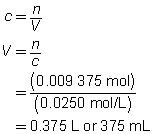

Module 6—Stoichiometry
 Explore
Explore
 Read
Read
© Elemental Imaging/shutterstock
As you learned in Module 5, quantitative aspects of a solution include the concentration of solute and volume of solution. Can you recall a relationship that exists between a solution’s concentration, its volume, and the number of moles of solute it contains? What might be similar about how you would use this relationship and how you have used other relationships, such as and PV = nRT, during your study in this module?
Read “7.4 Solution Stoichiometry” on pages 300 to 302 of your textbook. Work through “SAMPLE problem 7.4” and the “COMMUNICATION example.”
 Discuss
Discuss
Look at the “Stoichiometry Calculations” in the margin on page 302 of your textbook. Construct a flow chart that outlines the steps involved in stoichiometry calculations. The flow chart should summarize the use of the formulas you have used to perform calculations regardless of whether the known or desired substance in a reaction is a solid, gas, or part of a solution.
Save a copy of your answers to your course folder. You may wish to share your answers with your classmates or some other people.
 Self-Check
Self-Check
Complete “Practice” questions 1 to 3 on page 302 of your textbook.
Self-Check Answers
“Practice” questions 1 to 3, page 302
H2SO4(aq)
+
2 NH3(aq)
→
(NH4)2SO4(aq)
The concentration of the sulfuric acid solution is 0.537 mol/L.
3 Ca(OH)2(aq)
+
Al2SO4(aq)
→
3 CaSO4(s)
+
2 Al(OH)3(s)
c = 0.0250 mol/L
V = ?

The volume of the calcium hydroxide solution required is 375 mL.
2 FeCl3(aq)
+
3 Na2CO3(aq)
→
6 NaCl(aq)
+
Fe2(CO3)3(s)
c = 0.250 mol/L
V = ?
The volume of the sodium carbonate solution required is 90.0 mL.